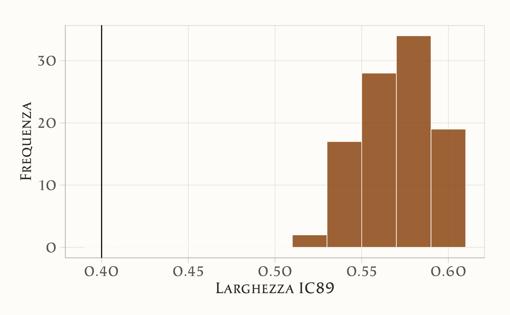
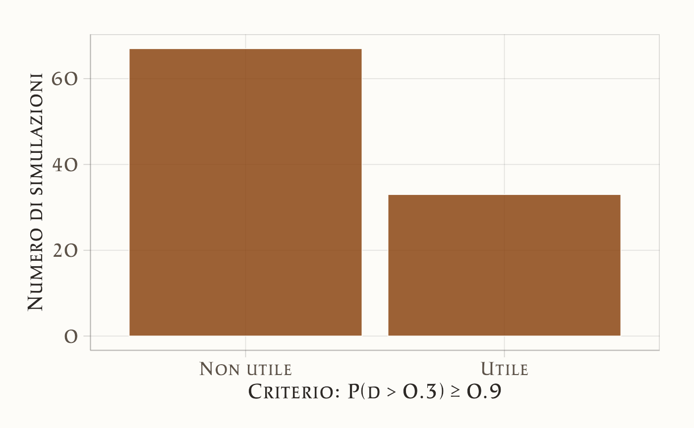

here::here("code", "_common.R") |>
source()
# Load packages
if (!requireNamespace("pacman")) install.packages("pacman")
pacman::p_load(mice, brms, cmdstanr)33 Pianificazione della dimensione campionaria
Introduzione
Nei capitoli precedenti abbiamo visto come stimare la media di una popolazione, come confrontare due gruppi e come valutare la grandezza di un effetto. Un filo conduttore è emerso chiaramente: ogni stima statistica è accompagnata da un margine di incertezza, che può essere più o meno ampio a seconda della quantità di dati a disposizione.
Questo ci porta a una domanda pratica fondamentale: quanti dati servono per affrontare in modo credibile la nostra domanda di ricerca? In psicologia, come in molte altre scienze sociali, raccogliere dati è spesso costoso e impegnativo. Pianificare in anticipo la dimensione campionaria significa quindi trovare un equilibrio tra vincoli pratici e obiettivi scientifici, evitando sia studi troppo piccoli — che producono stime imprecise e poco informative — sia campioni eccessivamente grandi, che sprecano risorse senza reale beneficio.
Nell’approccio frequentista, la pianificazione campionaria è tradizionalmente legata al concetto di potenza statistica: il calcolo della probabilità di rifiutare l’ipotesi nulla quando l’effetto è presente. In un’ottica bayesiana, lo stesso problema può essere affrontato in modo più trasparente, attraverso simulazioni o analisi predittive che ci permettono di esplorare come l’ampiezza dell’effetto atteso e il numero di osservazioni influiscano sulla precisione delle stime e sulla probabilità di trarre conclusioni scientificamente utili.
In questo capitolo vedremo come impostare la pianificazione della dimensione campionaria in chiave bayesiana, utilizzando esempi concreti e mostrando come la nozione di “grandezza dell’effetto” si traduca in criteri pratici per decidere il numero di partecipanti da includere in uno studio psicologico.
Panoramica del capitolo
- Presentare la definizione frequentista di potenza e il calcolo classico della dimensione campionaria.
- Discutere i limiti della potenza (soglie arbitrarie, stime imprecise, false certezze).
- Introdurre l’approccio bayesiano, basato su criteri di precisione e utilità pratica delle stime.
- Mostrare l’uso della simulazione generativa per valutare in anticipo l’informatività di uno studio.
- Fornire strumenti per pianificare campioni che producano risultati solidi e interpretabili in psicologia.
33.1 L’approccio frequentista
Nel framework frequentista, la potenza è definita come la probabilità, calcolata prima che uno studio venga condotto, che un determinato test statistico produca un p-value inferiore a una soglia prestabilita (tipicamente 0,05), dato un effetto reale ipotizzato.
Il calcolo della potenza richiede:
- una stima della dimensione dell’effetto atteso,
- una stima della variabilità nei dati (deviazione standard),
- una decisione sulla soglia di significatività,
- e infine un calcolo (o simulazione) della probabilità che il p-value sia < 0.05.
Si sconsiglia in genere di condurre studi con potenza bassa, perché hanno una bassa probabilità di produrre risultati “significativi”. Tuttavia, questo ragionamento non considera che il concetto stesso di significatività può essere fuorviante: anche quando un test ha potenza dell’80%, ciò non garantisce che l’effetto stimato sia preciso o utile.
33.1.1 La maledizione del vincitore
Uno studio con bassa potenza può produrre risultati statisticamente significativi che sono ingannevoli. In presenza di molto rumore, gli effetti significativi osservati tendono a essere:
- esagerati (errore di tipo \(M\), magnitude),
- sbagliati nel segno (errore di tipo \(S\), sign).
In altre parole, anche quando uno studio riesce a “scoprire” un effetto, la stima ottenuta può essere gravemente distorta. Questa è una delle ragioni principali per cui molti risultati pubblicati si rivelano non replicabili (Gelman & Carlin, 2014).
33.2 Un esempio concreto
Per rendere il confronto più chiaro, usiamo un esempio con gli stessi dati in entrambi gli approcci:
- differenza vera tra le medie: \(\Delta = 5\);
- deviazione standard comune: \(\sigma = 10\);
- dimensione del campione: \(n = 64\) per gruppo;
- effetto standardizzato: Cohen’s d = 0.5
33.2.1 Analisi frequentista: dimensione del campione per potenza dell’80%
Per stimare la dimensione del campione necessaria a ottenere una potenza dell’80% in un confronto tra due gruppi indipendenti (con varianza uguale), possiamo usare la funzione power.t.test() disponibile in R.
Nel nostro esempio ipotizziamo:
- una differenza attesa tra i gruppi pari a \(\Delta = 5\),
- una deviazione standard comune pari a \(\sigma = 10\),
- un test bilaterale con livello di significatività \(\alpha = 0.05\).
33.2.1.1 Calcolo in R
# Calcolo della dimensione campionaria necessaria per 80% di potenza
power.t.test(
delta = 5, # differenza attesa tra le medie
sd = 10, # deviazione standard
power = 0.8, # potenza desiderata
sig.level = 0.05, # livello di significatività
type = "two.sample",
alternative = "two.sided"
)
#>
#> Two-sample t test power calculation
#>
#> n = 63.8
#> delta = 5
#> sd = 10
#> sig.level = 0.05
#> power = 0.8
#> alternative = two.sided
#>
#> NOTE: n is number in *each* groupIl risultato indica che sono necessari circa 64 partecipanti per gruppo per ottenere l’80% di potenza con questi parametri. Tuttavia, come vedremo nella sezione successiva, questo valore non garantisce necessariamente che la stima dell’effetto sarà sufficientemente precisa o utile dal punto di vista decisionale. L’analisi bayesiana ci offrirà uno strumento più flessibile per valutare l’informatività del disegno proposto.
33.2.2 Analisi bayesiana: informatività a posteriori
Nell’approccio bayesiano, non ci si chiede se l’effetto è “significativo” rispetto a una soglia arbitraria, ma quanto è informativo il risultato per prendere decisioni pratiche. In questo contesto, pianificare uno studio significa domandarsi:
“Con quanti dati il mio modello bayesiano riuscirà a fornire una stima sufficientemente precisa e utile dell’effetto?”
Per rispondere, possiamo stabilire dei criteri di informatività che riflettano le esigenze del nostro problema. Due criteri possibili sono:
- l’intervallo di credibilità all’89% per Cohen’s d ha larghezza ≤ 0.4 (criterio di precisione);
- la probabilità a posteriori che d > 0.3 è ≥ 90% (criterio di utilità pratica).
33.2.2.1 Simulazione generativa di uno studio
Per verificare se un disegno sperimentale con \(n = 64\) per gruppo soddisfa questi criteri, possiamo simulare uno studio 100 volte, ogni volta:
- generando nuovi dati,
- stimando un modello bayesiano,
- valutando se il risultato è sufficientemente informativo.
Di seguito definiamo la funzione sim_once() che esegue una singola simulazione.
# Funzione per standardizzare su scala z
standardise <- function(x) (x - mean(x)) / sd(x)
# Una singola simulazione bayesiana di uno studio
sim_once <- function(n = 64, mu0 = 100, delta = 5, sigma = 10) {
# 1. Generazione dei dati
y0 <- rnorm(n, mu0, sigma) # gruppo controllo
y1 <- rnorm(n, mu0 + delta, sigma) # gruppo trattamento
# 2. Standardizzazione
dat <- tibble(score = standardise(c(y0, y1)),
group = factor(rep(c("ctrl", "trt"), each = n)))
# 3. Stima del modello bayesiano
fit <- brm(score ~ group,
data = dat,
backend = "cmdstanr",
chains = 2, iter = 1000, warmup = 500,
refresh = 0, silent = 0,
prior = c(
prior(normal(0, 2), class = "b"),
prior(exponential(2), class = "sigma")
))
# 4. Estrazione dei campioni posteriori e calcolo di Cohen's d
post <- as_draws_df(fit)
d_smp <- post$b_grouptrt / post$sigma
# 5. Output: due indici di informatività
tibble(
CIw89 = diff(quantile(d_smp, c(.055, .945))), # larghezza IC 89%
p_gt03 = mean(d_smp > 0.3) # P(d > 0.3)
)
}Ecco cosa succede passo passo:
- Simulazione dei dati
-
Si generano due gruppi di n = 64 osservazioni:
- Il gruppo di controllo ha media mu0 = 100.
- Il gruppo trattamento ha media aumentata di delta = 5.
- Entrambi i gruppi hanno la stessa variabilità (sigma = 10).
In pratica: simula un esperimento in cui il trattamento ha un effetto medio di 5 unità.
- Standardizzazione dei dati
score = standardise(c(y0, y1))Le osservazioni dei due gruppi vengono unite e standardizzate (portate su scala z): media = 0, deviazione standard = 1.
-
Questo serve a:
- rendere i dati comparabili tra simulazioni,
- semplificare l’interpretazione dei risultati (si lavora su scala standardizzata).
- Creazione del dataset
dat <- tibble(score = ..., group = ...)-
Si crea una tabella con le variabili:
- score: i dati standardizzati
- group: un’etichetta che indica se il dato appartiene al gruppo controllo (ctrl) o trattamento (trt).
- Stima del modello bayesiano
fit <- brm(score ~ group, ...)-
Si stima un modello bayesiano con brms, dove:
- la variabile score è prevista dalla variabile group,
- si usano priori debolmente informativi su effetto (b) e variabilità (sigma).
Il coefficiente
b_grouptrtstima la differenza media tra i gruppi (sulla scala standardizzata).
- Estrazione dei campioni posteriori
post <- as_draws_df(fit)
d_smp <- post$b_grouptrt / post$sigma- Si estraggono i campioni dalla distribuzione a posteriori.
- Si calcola Cohen’s d a posteriori dividendo l’effetto stimato per la deviazione standard stimata: d_smp.
- Output: due indicatori di informatività
- CIw89: larghezza dell’intervallo di credibilità all’89% → misura di precisione.
- p_gt03: proporzione dei campioni a posteriori in cui d > 0.3 → misura di utilità pratica.
In sintesi, ogni volta che chiami sim_once():
- simuli un nuovo dataset realistico;
- stimi l’effetto del trattamento con un modello bayesiano;
- misuri quanto è preciso e informativo il risultato.
Questa funzione è il mattone fondamentale per la simulazione generativa di uno studio: ti permette di verificare, ad esempio, se con n = 64 per gruppo riesci a stimare d in modo sufficientemente utile.
33.2.2.2 Esecuzione della simulazione
Simuliamo 100 studi indipendenti con n = 64 per gruppo:
Esaminiamo i risultati della simulazione:
33.2.2.3 Visualizzazione dei risultati
Il primo grafico mostra la distribuzione delle larghezze degli intervalli di credibilità all’89%, evidenziando quante simulazioni superano la soglia di 0.4. Il secondo mostra quante simulazioni soddisfano il criterio di utilità.
# Grafico 1: distribuzione della larghezza IC89
ggplot(res, aes(x = CIw89)) +
geom_histogram(binwidth = 0.02) +
geom_vline(xintercept = 0.4) +
labs(
x = "Larghezza IC89",
y = "Frequenza"
) 
# Grafico 2: classificazione delle simulazioni utili/non utili
ggplot(res, aes(x = p_gt03 >= 0.9)) +
geom_bar() +
scale_x_discrete(labels = c("FALSE" = "Non utile", "TRUE" = "Utile")) +
labs(
x = "Criterio: P(d > 0.3) ≥ 0.9",
y = "Numero di simulazioni"
) 
33.2.2.4 Interpretazione dei risultati
-
mean_CIrappresenta la larghezza media dell’intervallo di credibilità all’89%. Nel nostro caso è circa 0.569, quindi troppo ampio per considerare la stima precisa. -
prop_goodè la proporzione di simulazioni in cui l’evidenza a favore di un effetto praticod > 0.3supera il 90%. Conprop_good = 0.1, solo 1 simulazione su 10 soddisfa questo criterio.
Conclusione: con n = 64 per gruppo, lo studio simulato è sottodimensionato: raramente produce una stima precisa e utile. Serve un campione più grande (es. n = 80 o n = 100) per raggiungere criteri più severi di informatività.
33.2.2.5 Confronto con la potenza frequentista
Secondo l’approccio frequentista, n = 64 per gruppo garantisce circa 80% di potenza per d = 0.5. Ma la simulazione bayesiana mostra che:
- l’intervallo di credibilità risulta troppo ampio (≈ 0.57);
- l’evidenza utile (P(d > 0.3) ≥ 0.9) si verifica solo nel 10% dei casi.
Questo evidenzia i limiti della potenza come unico criterio per pianificare gli studi. Anche uno studio “con potenza adeguata” potrebbe produrre risultati imprecisi o non praticabili, e contribuire agli errori di tipo M (esagerazione della stima) o S (errore nel segno dell’effetto).
In sintesi, pianificare uno studio non significa garantire il p < .05, ma garantire che la stima sia abbastanza precisa e utile per informare decisioni.
Riflessioni conclusive
In questo capitolo abbiamo visto come la questione della dimensione campionaria sia inseparabile dal problema dell’inferenza statistica. Ogni stima è accompagnata da incertezza, e l’ampiezza di questa incertezza dipende in larga misura dal numero di osservazioni a disposizione. Studiare quante persone includere in un’indagine non è quindi un passaggio tecnico secondario, ma una scelta sostanziale che determina la credibilità e l’utilità scientifica dei risultati.
L’approccio bayesiano ci offre strumenti flessibili per affrontare questo problema. Attraverso simulazioni e analisi predittive possiamo esplorare in anticipo gli scenari più plausibili, valutare come diverse dimensioni campionarie incidano sulla precisione delle stime e collegare le nostre decisioni a soglie di rilevanza pratica. Questo rende la pianificazione non più un esercizio astratto, ma un vero e proprio strumento di progettazione della ricerca, in cui obiettivi teorici, risorse pratiche e criteri di utilità scientifica sono considerati insieme.
Il percorso che abbiamo seguito — dalla stima di una media al confronto tra due gruppi, dalla valutazione della grandezza dell’effetto alla pianificazione campionaria — ci consegna un quadro coerente: fare statistica in psicologia significa gestire l’incertezza in modo esplicito, valutare l’importanza degli effetti osservati e pianificare con consapevolezza la raccolta dei dati.
Nel prossimo capitolo vedremo come l’ANOVA a una via si inserisca in questo stesso quadro, come caso particolare del modello lineare. Questo ci permetterà di consolidare ulteriormente la visione unificata che abbiamo sviluppato e di collegare strumenti apparentemente diversi all’interno di un impianto metodologico comune.
Bibliografia
Gelman, A., & Carlin, J. (2014). Beyond Power Calculations: Assessing Type S (Sign) and Type M (Magnitude) Errors. Perspectives on Psychological Science, 9(6), 641–651.
Gelman, A., Hill, J., & Vehtari, A. (2021). Regression and other stories. Cambridge University Press.